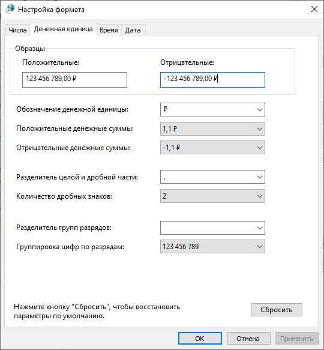
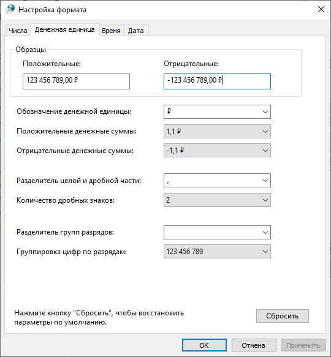

Глава 1. Интернационализация и Локализация.
Введение.
Интернационализация (англ. internationalization или сокращенно i18n) – это процесс проектирования и разработки ПО, который позволяет легко перевести продукт, приложение или документ на другие языки и регионы без необходимости внесения технических изменений. По сути, речь идет о том, чтобы продукт или услуга разрабатывались таким образом, чтобы не отдавать предпочтение одной культуре или языку по сравнению с другой, и подготовить их для мировой аудитории.
Локализация (англ. localization или l10n) – это процесс перевода и культурной адаптации продукта к особенностям определенной страны, региона.
В принципе можно пойти в лоб и создать по одному приложению на каждый регион/страну. Такой вариант очень дорого и неудобно поддерживать, ведь работать нужно будет с каждым продуктом отдельно. Далее приходит на ум более удобный вариант — создать приложение, которое включает в своём коде локализацию для всех необходимых вам регионов/стран. Вариант уже лучше, но и его достаточно сложно будет поддерживать. Плюс велика вероятность, что данные локализации будут вплотную пересекаться с основным кодом приложения. Далее мы приходим к мысли, что было бы удобно создать продукт, в котором региональные и культурные особенности (текст, картинки, форматы даты, времени и т.п.) будут вынесены в отдельные блоки. Никакого хардкода в переводимых местах, а блоки будут подгружаться при использовании того или иного региона/страны. Данный набор ресурсов называют “локалью” (locale).
Реализацию интернационализации обычно начинают на ранних этапах проекта, чтобы подготовить ваш продукт к будущей локализации. Во время процесса интернационализации определяют, что будет изменяться для будущих локалей (например текст, изображения и т.п.) и выносят эти данные во внешние файлы. Также во время интернационализации (и при локализации тоже) нужно добавить возможность изменять календари, форматы даты, времени, цифр, денежных символов и в целом символов, специфичных для определенных языков и многое другое. Как итог, в идеальном варианте, добавление новой локали не должно требовать от нас изменения исходного кода продукта.
Ну и, конечно, очень тесно связана с этим процессом локализация. На этой стадии участники разработки продукта работают с локациями — внешними ресурсами (файлами), которые подгружаются приложением для загрузки локализации для вашей страны/региона. Основные зоны локализации, то есть адаптации к местным нормам и традициям:
текст и связанные с ним функции (например сортировка, поиск, поддержка спец. символов и т.п.)
документация (мануалы, гайды, FAQ, разделы справки и т.п.)
форматы даты и времени (Месяц/Дата/Год (США) или День Месяц Год (Россия))
формат чисел (разделитель десятичных знаков точка или запятая)
формат денежных величин
поддержка различных календарей (например, неделя начинается с понедельника (Европа) или с воскресения (США), праздники по лунному календарю (Китай))
изображения (картинки, иконки)
звук (в частности, озвучка, если таковая имеется)
реклама (текстовая, аудио, видео)
и т.д.
Если говорить по-простому, то интернационализация — это проектирование и написание кода, пригодного для перевода на разные языки.
А локализация — это перевод и культурная адаптация всех элементов, такие как тексты, картинки, шрифты.
Дополнительные материалы:
Локализация Против Интернационализации
Гайд по тестированию локализации и интернационализации, а также большой и полезный checklist
Translation Technology: A Look at Its Past, Present, and Future
Локали.
Локали — это набор настроек, которые определяют язык, используемый системой, а также региональные особенности, такие как денежные знаки, формат чисел, даты и времени и наборы символов.
Если у вас Windows, то выполните команду
intl.cpl
Вы увидите региональные настройки и в дополнительных параметрах форматы чисел, денег, времени, дат.

 



Это все требует не просто перевода, а подлежит приведению в соответствии с особенностями региона.
Поскольку нам интересен запуск на сервере, то мы будем рассматривать все на примере ОС Linux. В Linux эти настройки хранятся в переменных среды. Выполним команду:
locale
И получим список переменных среды, в которых хранятся все региональные настройки:
LANG=en_US.UTF-8
LANGUAGE=
LC_CTYPE="en_US.UTF-8"
LC_NUMERIC="en_US.UTF-8"
LC_TIME="en_US.UTF-8"
LC_COLLATE="en_US.UTF-8"
LC_MONETARY="en_US.UTF-8"
LC_MESSAGES="en_US.UTF-8"
LC_PAPER="en_US.UTF-8"
LC_NAME="en_US.UTF-8"
LC_ADDRESS="en_US.UTF-8"
LC_TELEPHONE="en_US.UTF-8"
LC_MEASUREMENT="en_US.UTF-8"
LC_IDENTIFICATION="en_US.UTF-8"
LC_ALL=
А сами переводы для программ лежат по пути /usr/share/locale/ (или
/usr/local/share/locale или в директории приложение/locale) в
папках с именем языка и подпапкой, соответствующей переменной среды для
которой перевод. Например, для русского языка это ru/LC_MESSAGES, в
этой папке лежат скомпилированные переводы для приложений по имени
каждого приложения:
apt.mo
debconf.mo
dpkg.mo
mc.mo
xdg-user-dirs.mo
А само имя нашего приложения в дальнейшем для перевода обозначается в терминологии инструментов перевода как домен. Если мы создаем приложение на Python как пакет, то доменом у нас будет название приложения, совпадающее с папкой пакета.
Для нашего приложения нам нет необходимости переводить большой объем разных данных и устанавливать в систему. Мы будем переводить только строки, которые выводятся пользователю LC_MESSAGES.
При запуске любого приложения (не важно на каком языке это все написано, python или C) инструменты перевода производят поиск файлов перевода для подстановки переведенных строк в папке, указанной в настройках и файлы с именем домена. Для нашего приложения это будет папка с именем locales в корне проекта. Далее это мы подробнее разберем на практике.